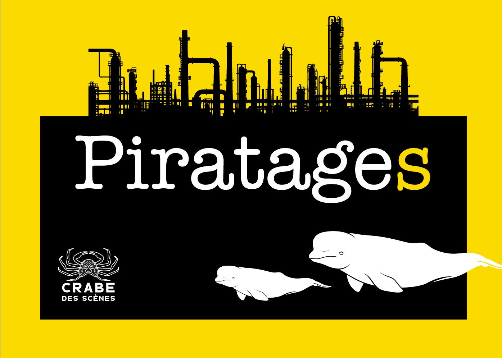

La pièce
Piratages explore la démesure du sentiment éco anxieux en passant par la voix et les actions d’un protagoniste activiste. Le personnage principal lutte pour que le pouvoir citoyen sur l’action climatique ne soit pas rompu. Théâtre à processus documentaire, le contexte de la pièce rappelle des luttes menées au Québec pour la protection de l’environnement en donnant la parole à des citoyens impliqués dont certains extraits sont utilisés sur scène. Piratages est une fiction inspiré de faits réels dans lequel le public est amené à prendre la parole.
Diffusant des entrevues avec des citoyens de la Baie-des-Chaleurs, du Saguenay et de Québec, le spectacle original a été écrit par la comédienne Cathie Belley et le poète Bilbo Cyr. Des images de la faune aquatique des artistes gaspésiens Maryse Goudreau et Olivier D. Asselin, sont aussi diffusés dans ce théâtre à processus documentaire.

Le projet
Le spectacle d’intervention en environnement parle d’une histoire de combat face aux changements climatiques et trouve des résonnances dans l’actualité locale. Le groupe, composé d’acteurs, d’une médiatrice, de techniciens et concepteurs, réalise ce projet culturel en faisant intervenir la population locale lors de la représentation. Les artistes désirent créer des interventions sur scène avec le public. Ils échangeront avec les gens pour que l’auberge devienne un lieu de diffusion et de discussion autour des enjeux environnementaux. La culture environnementale s’installe et se partage sur le territoire.
Les rapports entre le documentaire, les scènes avec de la vidéo et le spectacle vivant ont d’abord été exploré lors d’une résidence au théâtre du GESU en juin 2024. Le groupe initie maintenant des médiations avec le public sur scène à l’été 2026. L’Auberge Mowatt deviendra un lieu de création théâtral et de réception des publics, du 10 au 22 août.

Ateliers de jeu
Nous explorons pendant cette résidence offerte par Maria à l'Auberge Mowatt. Nous cherchons à créer un théâtre inclusif pour la population locale. Nous voulons que la scène vous représente, porte votre voix.
L’outil est le théâtre. Le but d’occuper l’Auberge en est un de communication et de sensibilisation. En amont des présentations à l’Auberge les 21 et 22 août, le groupe offre gratuitement quatre ateliers de formation aux citoyens désireux de s’impliquer de manière créative dans l’intervention publique. Les ateliers, donnés sur place par des professionnels, les initieront à la technique du chœur : forme de jeu, où le citoyen prend la parole dans un spectacle. Les participants aux ateliers sont invités à présenter leurs travaux sur scène avec la troupe. Ils apporteront leurs propres réflexions en salle.
L’Auberge se prête aux partages culturels et les artistes sauront la mettre en valeur avec les citoyens. Les membres du groupe y ont travaillé souvent et longtemps. En offrant cet espace de rencontres, Maria reçoit public et artistes autour d’un même sujet. Les ateliers théâtre et le spectacle d’intervention au Parc du Vieux-Quai, en échange d’un cachet de représentation aux artistes, met en valeur la scène locale et offre une tribune originale pour s’exprimer sur un sujet sensible et pertinent.